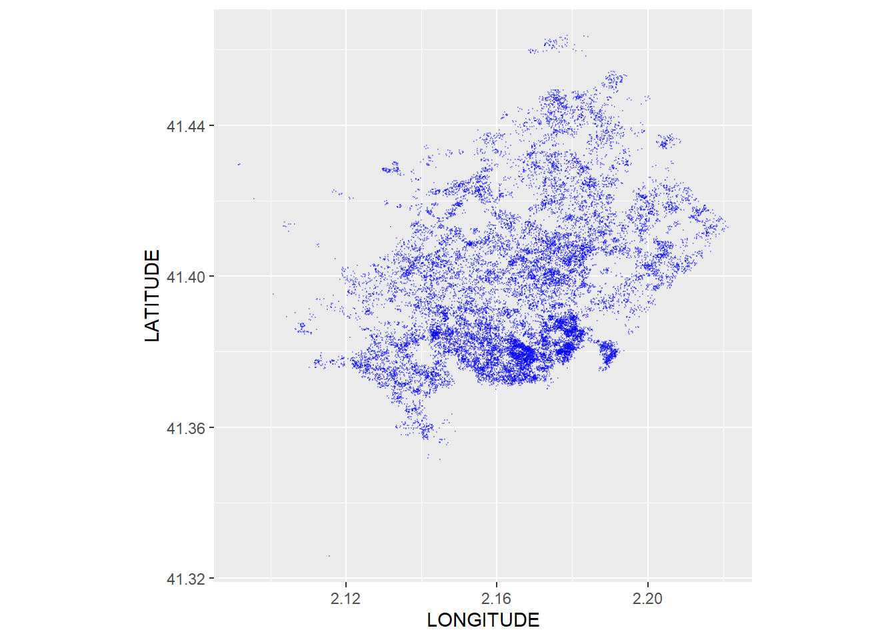

Geodescriptiva
2024 - 2025
História del análisis geospacial (Snow, 1856)
El primer análisis de datos espaciales fue realizado por el médico John Snow en 1854.


Construyó un famoso mapa que mostraba las muertes causadas por un brote de cólera.
Se detectarón 127 muertes en 3 días
Se ubicaban en el barrio del Soho de Londres
Se posicionaron las bombas de agua del área

Solución:
Descubrió que había un agrupamiento significativo de muertes alrededor de una determinada bomba, y al quitar la manija de la bomba se detuvo el brote.


Estadística para datos espaciales
Tip
El área que se encarga de estudiar y analizar los datos espaciales es la estadística espacial o la estadística para datos espaciales.
Debido a que los datos espaciales surgen en múltiples campos y aplicaciones, hay una gran variedad de tipos de datos, estructuras y escenarios espaciales .
En 1993, N.A.C Cressie clasificó los datos geospaciales, basado en la naturaleza del dominio espacial, de la siguiente forma:

Seguimos con el ejemplo de los puertos marítimos y proyectamos los puertos en el mismo CRS que el mapamundi utilizando la proyección de Robinson1 (la proyección cartográfica más popular para mapamundis)
R packages
El paquete crsuggest facilita la elección de la proyección más conveniente, al sugerir transformaciones de sistemas de referencia de coordenadas adecuadas para conjuntos de datos espaciales. Devuelve un marco de datos con códigos CRS que se pueden utilizar para proyectos de transformación y mapeo CRS.

Los puntos también pueden estar conectados entre sí, de manera que formen geometrías más complejas, como líneas y polígonos. El río Tajo está representado como una línea (tajo, sucesión de puntos unidos entre sí) y la ciudad de Toledo como un polígono (toledo, línea de puntos cerrada formando un espacio continuo).

Datos en Raster
Los datos raster son datos proporcionados en una rejilla de píxeles (regulares o no) denominada matriz.
El caso más popular de un raster es una fotografía. La imagen se representa como una serie de celdas, determinadas por la resolución de la imagen (el tamaño del píxel, 5x5 (regular) y 10x10 (irregular)) y el valor del píxel (RGB –red, green, blue–) que determina el color que presenta cada uno de estos píxeles.
En el ámbito de los datos espaciales, un archivo raster está formado por una malla de píxeles georreferenciada.

Para poder seguir con la sesión de hoy, necesitaremos instalar el paquete CDR. Para ello deberemos de seguir las siguientes indicaciones: